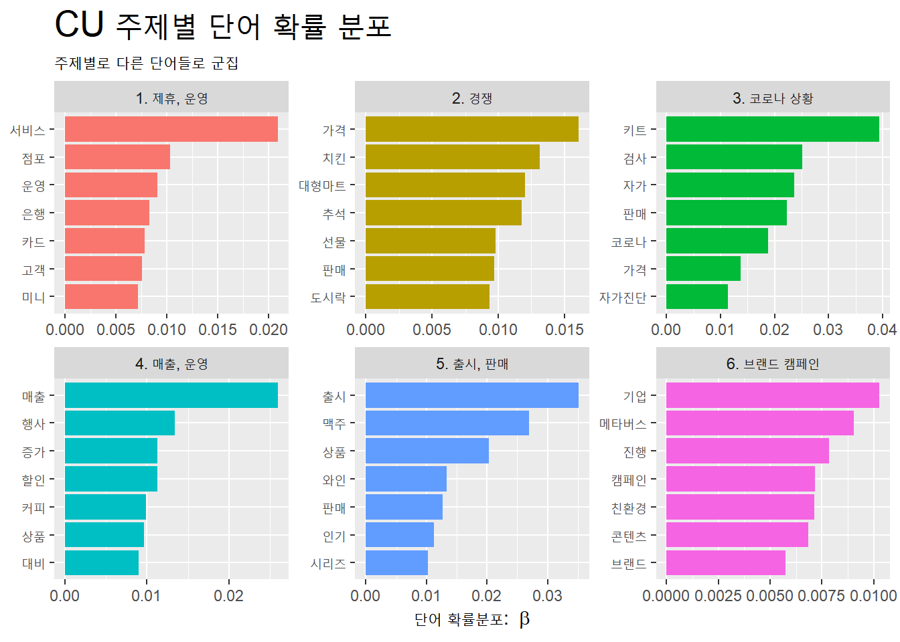

주제 선정 이유 : 최근 들어 커머스 분야가 다양해짐에 따라 대형마트, 중형마트, 온라인 커머스, 편의점 등이 각각의 장단점을 활용하여 경영전략 및 마케팅을 펼치고 있다. 그 중에서도 편의점은 소비자들의 생활반경 근처에 다수 포진해있음에 따라 적극적인 변화를 모색하고 있다. 대표적으로 원소주, 말차 등 유명 브랜드의 상품을 독점 판매하거나 tv프로그램 ‘편스토랑’ 등과 같이 콜라보 프로젝트를 진행하고 있다. 이러한 상황에서 각각의 편의점의 평판을 분석하여 어떠한 차이를 보이고 있는지 살펴보고자 한다.
2) 자료분석 방법
자료 유형 : 뉴스 (정치, 사회, 스포츠 뉴스 제외)
자료 출처 : 빅카인즈
자료 기간 : 2021. 09. 01. ~ 2022. 09. 30. (약 1년간)
자료수집
GS25
검색어 : ((GS25) OR (지에스25) OR (gs25) OR (지에스이십오))
총 4416건의 기사
세븐일레븐
검색어 : ((코리아세븐) OR (Korea Seven Co.) OR ((주)코리아세븐) OR (주식회사 코리아세븐) OR (세븐일레븐))
GS25 부정 이미지 : ‘부담’, ‘화재’ 단어의 경우 부정적인 단어를 활용하여 마케팅을 하면서 나타남. ‘편의점 택배 부담없이 GS25, 반값택배’, ‘화재 시, GS25 소화기 제공’ 문구 활용을 볼 수 있음. ’피해’의 경우, ’국내 최초 가맹점 사기 피해 보상 보험 지원’과 ’남혐 논란, GS25피해 CU로’라는 내용으로 살펴볼 수 있음.
Building corpus...
Converting to Lower Case...
Removing punctuation...
Removing stopwords...
Removing numbers...
Stemming...
Creating Output...
Code
out <-prepDocuments(processed$documents, processed$vocab, processed$meta, lower.thresh =0)docs <- out$documentsvocab <- out$vocabmeta <- out$metatopicN <-c(3, 10)#storage <- searchK(out$documents, out$vocab, K = topicN)CU_stm_fit <-stm(documents = docs,vocab = vocab,K =6,data = meta,max.em.its =75,init.type ="Spectral",seed =25,verbose = F )#labelTopics(CU_stm_fit)CU_topic_name <-tibble(topic =1:6,name =c("1. 제휴, 운영","2. 경쟁","3. 코로나 상황","4. 매출, 운영","5. 출시, 판매","6. 브랜드 캠페인"))CU_td_beta <- CU_stm_fit %>%tidy(matrix ='beta') CU_topic_name <- CU_td_beta %>%group_by(topic) %>%slice_max(beta, n =7) %>%left_join(CU_topic_name, by ="topic")CU_topic_name %>%ggplot(aes(x = beta, y =reorder_within(term, beta, name), # 각 주제별로 재정렬fill = name)) +geom_col(show.legend = F) +facet_wrap(~name, scales ="free") +scale_y_reordered() +# 재정렬한 y축의 값 설정labs(x =expression("단어 확률분포: "~beta), y =NULL,title ="CU 주제별 단어 확률 분포",subtitle ="주제별로 다른 단어들로 군집") +theme(plot.title =element_text(size =20))

8. 관련보도 상위 주제어
1) GS25
Code
GS25_td_gamma <- GS25_stm_fit %>%tidy(matrix ="gamma") GS25_top_terms <-GS25_td_beta %>%group_by(topic) %>%slice_max(beta, n =5) %>%select(topic, term) %>%summarise(terms =str_flatten(term, collapse =", ")) GS25_gamma_terms <-GS25_td_gamma %>%group_by(topic) %>%summarise(gamma =mean(gamma)) %>%left_join(GS25_top_terms, by ='topic') %>%left_join(GS25_topic_name, by ='topic')GS25_gamma_terms %>%ggplot(aes(x = gamma, y =reorder(name, gamma), fill = name)) +geom_col(show.legend = F) +geom_text(aes(label =round(gamma, 2)), # 소수점 2자리 hjust =1.15) +# 라벨을 막대도표 안쪽으로 이동geom_text(aes(label = terms), hjust =-0.05) +# 단어를 막대도표 바깥으로 이동#scale_x_continuous(expand = c(0, 0), # x축 막대 위치를 Y축쪽으로 조정# limit = c(0, 1)) + # x축 범위 설정labs(x =expression("문서 확률분포"~(gamma)), y =NULL,title ="GS25 관련보도 상위 주제어",subtitle ="주제별로 기여도가 높은 단어 중심") +theme(plot.title =element_text(size =20))
’사업경영’과 관련하여 GS25가 쿠캣마켓과 요기요를 인수한 점을 확인함. 동시에 세븐일레븐이 미니스톱을 인수한 내용도 함께 살펴볼 수 있음.
소주, 맥주, 코로나진단키트가 GS25의 주요 판매품인 것을 확인할 수 있음.
은행, 택배의 역할들을 가져오려는 모습들이 보이고, 운영에 있어 컨테이너 무인점포를 운영한 것이 큰 이슈가 됨.
2) 세븐일레븐
Code
seven_td_gamma <- seven_stm_fit %>%tidy(matrix ="gamma") seven_top_terms <-seven_td_beta %>%group_by(topic) %>%slice_max(beta, n =5) %>%select(topic, term) %>%summarise(terms =str_flatten(term, collapse =", ")) seven_gamma_terms <-seven_td_gamma %>%group_by(topic) %>%summarise(gamma =mean(gamma)) %>%left_join(seven_top_terms, by ='topic') %>%left_join(seven_topic_name, by ='topic')seven_gamma_terms %>%ggplot(aes(x = gamma, y =reorder(name, gamma), fill = name)) +geom_col(show.legend = F) +geom_text(aes(label =round(gamma, 2)), # 소수점 2자리 hjust =1.15) +# 라벨을 막대도표 안쪽으로 이동geom_text(aes(label = terms), hjust =-0.05) +# 단어를 막대도표 바깥으로 이동#scale_x_continuous(expand = c(0, 0), # x축 막대 위치를 Y축쪽으로 조정# limit = c(0, 1)) + # x축 범위 설정labs(x =expression("문서 확률분포"~(gamma)), y =NULL,title ="세븐일레븐 관련보도 상위 주제어",subtitle ="주제별로 기여도가 높은 단어 중심") +theme(plot.title =element_text(size =20))
와인이 세븐일레븐의 매출에 큰 영향을 미치고 있음을 짐작할 수 있음.
다른 편의점과 달리 배달, 로봇, 배송 등의 키워드를 통해 모빌리티에 큰 관심을 살펴볼 수 있음.
포켓몬 캐릭터를 활용한 콜라보레이션이 큰 이슈가 되었음.
3) CU
Code
CU_td_gamma <- CU_stm_fit %>%tidy(matrix ="gamma") CU_top_terms <-CU_td_beta %>%group_by(topic) %>%slice_max(beta, n =5) %>%select(topic, term) %>%summarise(terms =str_flatten(term, collapse =", ")) CU_gamma_terms <-CU_td_gamma %>%group_by(topic) %>%summarise(gamma =mean(gamma)) %>%left_join(CU_top_terms, by ='topic') %>%left_join(CU_topic_name, by ='topic')CU_gamma_terms %>%ggplot(aes(x = gamma, y =reorder(name, gamma), fill = name)) +geom_col(show.legend = F) +geom_text(aes(label =round(gamma, 2)), # 소수점 2자리 hjust =1.15) +# 라벨을 막대도표 안쪽으로 이동geom_text(aes(label = terms), hjust =-0.05) +# 단어를 막대도표 바깥으로 이동#scale_x_continuous(expand = c(0, 0), # x축 막대 위치를 Y축쪽으로 조정# limit = c(0, 1)) + # x축 범위 설정labs(x =expression("문서 확률분포"~(gamma)), y =NULL,title ="CU 관련보도 상위 주제어",subtitle ="주제별로 기여도가 높은 단어 중심") +theme(plot.title =element_text(size =20))
다른 편의점과 달리, 신제품 출시보다는 브랜드 캠페인에 많은 노력을 기울임.
마케팅에 있어서도 특정 브랜드, 캐릭터와의 콜라보레이션보다는 카드 제휴, 할인 행사 등 자체적으로 진행하는 행사가 주를 이룸.
9. 결론
1) 평판 비교
공통점
편의점 3사가 공통적으로 ‘코로나 자가진단키트’, ’주류’와 관련된 단어들이 다수 언급되었습니다. 그 배경을 살펴보면 다음과 같습니다. 코로나 상황에서 자가진단키트가 판매가능해지자 편의점들은 발빠르게 판매를 시작하였고, 동네를 기점으로 점포들이 많이 형성되어 있어서 소비자들이 쉽게 접근할 수 있었습니다. 더불어 편의점의 주요 판매제품이 주류임을 인지하고 이와 관련하여 단독판매, 프리미엄 매장, 제품 확대 등의 노력들이 진행하였습니다.
GS25 : 스타트업 인수를 통해 사업 고도화를 진행하고, 은행 및 택배 등 다른 산업군의 역할들을 편의점에 적용하려는 시도들이 많이 언급되었습니다. 즉, ’사업확장’을 중심으로 평판을 형성하고 있음을 확인하였습니다.
세븐일레븐 : 주류 중 와인 상품 다양화를 진행하고, 포켓몬 캐릭터를 활용하여 제품을 판매하고 팝업스토어를 운영하였습니다. 즉, ’제품 브랜딩’을 중심으로 평판을 형성하고 있음을 확인하였습니다. 더불어 모빌리티 사업의 확장과 관련하여서도 높은 빈도로 언급되었습니다.
CU : 카드 제휴 및 할인 행사 등의 프로모션을 중심으로 마케팅을 진행하고, 메타버스와 결합하거나 친환경을 주제로 회사 브랜드를 형성하는데 집중하고 있습니다. 즉, ’회사 브랜드 캠페인’을 중심으로 평판을 형성하고 있음을 확인하였습니다.
2) 평판 전략 방향
GS25는 마을 반경 안에서 자주 방문하는 곳들을 통합하려는 시도와 함께, 화재시 소화기를 무상 제공하는 등 일상과 밀접한 캠페인을 진행하였습니다. 즉, ’동네 주요 기점’을 성장하려는 노력을 기사를 통해 잘 전달되었습니다.
세븐일레븐은 제품에 있어 타사와 차별화를 가지려고 노력하였습니다. 이는 곧 다른 편의점이 아닌 해당 편의점을 방문해야만 하는 이유를 제시해줌으로 좋은 전략이라고 볼 수 있습니다. 이러한 전략을 기사를 통해 더 견고히 하려는 모습이 보였습니다.
CU는 기능적인 프로모션과 회사 브랜딩에 집중하였지만 각각의 요소들이 일관된 메시지(혹은 컨셉)를 보여주고 있지는 않습니다. 경쟁력을 가지기 위해서는 메시지를 분명히 하고 프로모션, 사업확장, 캠페인 등에 있어 유기적으로 일관된 컨셉을 보여주어야 할 것입니다. 그래야만 회사에서 효과적으로 평판 관리를 할 수 있을 뿐만 아니라 장기적으로 충성고객을 형성할 수 있을 것입니다.
Source Code
---title: "언론분석을 통한 편의점 평판 비교분석"subtitle: "2021. 09. 01 ~ 2022. 09. 30."format: html: code-fold: true code-tools: trueeditor: visualauthor: 언론홍보학과 4학년 김수진(2018102101)title-block-style: defaulttitle-block-banner: "#c7c3c3"date: 2022. 10. 05.date-modified : 2022. 10. 18.---#### 목차1. 개요- 1) 분석주제 및 선정 이유- 2) 자료분석 방법 2. 자료수집- 1) 패키지 설치- 2) 데이터 수집3. 자료분석-총빈도- 1) GS25- 2) 세븐일레븐- 3) CU- 4) 분석4. 자료분석-상대빈도- 1) GS25, 세븐일레븐- 2) GS25, CU- 3) 세븐일레븐, CU5. 감정분석- 1) 사전 데이터 프레임 만들기- 2) GS25- 3) 세븐일레븐- 4) CU6. 감정분석 - 긍정어, 부정어- 1) GS25- 2) 세븐일레븐- 3) CU7. 토픽모델링- 1) GS25- 2) 세븐일레븐- 3) CU8. 관련보도 상위 주제어- 1) GS25- 2) 세븐일레븐- 3) CU9. 결론- 1) 평판 비교- 2) 평판 전략 방향### 1. 개요#### 1) 분석주제 및 선정 이유- 분석 주제 : 언론분석을 통한 편의점 평판 비교 분석- 주제 선정 이유 : 최근 들어 커머스 분야가 다양해짐에 따라 대형마트, 중형마트, 온라인 커머스, 편의점 등이 각각의 장단점을 활용하여 경영전략 및 마케팅을 펼치고 있다. 그 중에서도 편의점은 소비자들의 생활반경 근처에 다수 포진해있음에 따라 적극적인 변화를 모색하고 있다. 대표적으로 원소주, 말차 등 유명 브랜드의 상품을 독점 판매하거나 tv프로그램 '편스토랑' 등과 같이 콜라보 프로젝트를 진행하고 있다. 이러한 상황에서 각각의 편의점의 평판을 분석하여 어떠한 차이를 보이고 있는지 살펴보고자 한다.#### 2) 자료분석 방법- 자료 유형 : 뉴스 (정치, 사회, 스포츠 뉴스 제외)- 자료 출처 : 빅카인즈- 자료 기간 : 2021. 09. 01. ~ 2022. 09. 30. (약 1년간)- 자료수집 1) GS25 - 검색어 : ((GS25) OR (지에스25) OR (gs25) OR (지에스이십오)) - 총 4416건의 기사 2) 세븐일레븐 - 검색어 : ((코리아세븐) OR (Korea Seven Co.) OR ((주)코리아세븐) OR (주식회사 코리아세븐) OR (세븐일레븐)) - 총 3520건의 기사 3) CU - 검색어 : ((CU편의점) OR (CU) OR (CU 편의점)) - 총 5241건의 기사### 2. 자료 수집#### 1) 패키지 설치```{r}#| label: 패키지 설치#| echo: true#| warning: false#| output: falsepackage_list <-c("tidyverse", "tidytext", "readxl", "kableExtra", "multilinguer", "RcppMeCab", "KoNLP", "lubridate", "tidylo", "stm", "reshape2", "dplyr", "ggplot2", "stringr", "rvest", "wordcloud", "tm", "VennDiagram", "gt")#package_list_installed <- package_list %in% installed.packages()[,"Package"]# new_pkg <- package_list[!package_list_installed]# if(length(new_pkg)) install.packages(new_pkg)lapply(package_list, require, character.only =TRUE)```#### 2) 데이터셋 수집```{r}#| label: 데이터셋 수집#| echo: true#| warning: falseGS25_df <- readxl::read_excel("GS25_year_data.xlsx") %>%select(제목, 본문)seven_df <- readxl::read_excel("seveneleven_year_data.xlsx") %>%select(제목, 본문)CU_df <- readxl::read_excel("CU_year_data.xlsx") %>%select(제목, 본문)```### 3. 자료분석-총빈도#### 1) GS25```{r}#| label: 총빈도_GS25#| echo: true#| warning: falseGS25_df2 <- GS25_df %>%distinct(제목, .keep_all = T) %>%mutate(ID =factor(row_number())) %>%mutate(label ="0") %>%unite(제목, 본문, col ="text", sep =" ") %>%mutate(text =str_squish(text))GS25_tk <- GS25_df2 %>%mutate(text =str_remove_all(text, "[^(\\w+|\\s)]")) %>%unnest_tokens(word, text, token = extractNoun, drop = F) %>%count(word, sort = T)GS25_tk <-GS25_tk %>%filter(!word %in%c("gs", "gs25", "리테일", "기자", "편의점")) %>%filter(str_detect(word, "[:alpha:]+")) %>%filter(str_length(word) >1) %>%slice_max(n, n =15) %>%mutate(word =reorder(word, n))GS25_tk %>%ggplot(aes(word, n)) +geom_col() +coord_flip() +labs(title ="GS25 총빈도")```#### 2) 세븐일레븐```{r}#| label: 총빈도_세븐일레븐#| echo: true#| warning: falseseven_df2 <- seven_df %>%distinct(제목, .keep_all = T) %>%mutate(ID =factor(row_number())) %>%mutate(label ="0") %>%unite(제목, 본문, col ="text", sep =" ") %>%mutate(text =str_squish(text))seven_tk <- seven_df2 %>%mutate(text =str_remove_all(text, "[^(\\w+|\\s)]")) %>%unnest_tokens(word, text, token = extractNoun, drop = F) %>%count(word, sort = T)seven_tk <-seven_tk %>%filter(!word %in%c("세븐일레븐", "기자", "편의점", "롯데")) %>%filter(str_detect(word, "[:alpha:]+")) %>%filter(str_length(word) >1) %>%slice_max(n, n =15) %>%mutate(word =reorder(word, n))seven_tk %>%ggplot(aes(word, n)) +geom_col() +coord_flip() +labs(title ="세븐일레븐 총빈도")```#### 3) CU```{r}#| label: 총빈도_CU#| echo: true#| warning: falseCU_df2 <- CU_df %>%distinct(제목, .keep_all = T) %>%mutate(ID =factor(row_number())) %>%mutate(label ="0") %>%unite(제목, 본문, col ="text", sep =" ") %>%mutate(text =str_squish(text))CU_tk <- CU_df2 %>%mutate(text =str_remove_all(text, "[^(\\w+|\\s)]")) %>%unnest_tokens(word, text, token = extractNoun, drop = F) %>%count(word, sort = T)CU_tk <-CU_tk %>%filter(!word %in%c("cu", "기자", "편의점", "리테일", "bgf")) %>%filter(str_detect(word, "[:alpha:]+")) %>%filter(str_length(word) >1) %>%slice_max(n, n =15) %>%mutate(word =reorder(word, n))CU_tk %>%ggplot(aes(word, n)) +geom_col() +coord_flip() +labs(title ="CU 총빈도")```#### 4) 분석- 편의점 3사에서 중복으로 나타나는 단어, '키트'는 코로나 상황으로 인한 '코로나 자가진단키트' 판매와 연관되어 있음을 알 수 있음.- 편의점 3사에서 '소주', '맥주', '와인' 등 주류 관련 단어 반복적으로 나타남.### 4. 자료분석-상대빈도#### 1) GS25, 세븐일레븐```{r}#| label: 상대빈도_세팅1#| echo: true#| warning: falseweighted_log_odds_df1 <-bind_rows(GS25_tk, seven_tk, .id ="party") %>%bind_log_odds(set = party,feature = word, n = n) %>%arrange(-log_odds_weighted)``````{r}#| label: 상대빈도_GS25, 세븐일레븐#| echo: true#| warning: falselibrary(gt)library(dplyr)GS25.seven_df <-bind_cols( weighted_log_odds_df1 %>%group_by(party =ifelse(party ==1, "GS25", "세븐일레븐")) %>%arrange(party) %>%select(-party) %>%head(15), weighted_log_odds_df1 %>%group_by(party =ifelse(party ==1, "GS25", "세븐일레븐")) %>%arrange(desc(party)) %>%select(-party) %>%head(15) ) GS25.seven_df <- GS25.seven_df[-c(1,5)]GS25.seven_df %>%gt() %>%tab_header("상대적으로 많이 사용한 단어" ) %>%tab_spanner(label ="GS25 기준",columns =1:3 ) %>%tab_spanner(label ="세븐일레븐 기준",columns =4:6 ) %>%cols_label(word...2 ="명사",n...3 ="빈도",log_odds_weighted...4 ="가중상대빈도",word...6 ="명사",n...7 ="빈도",log_odds_weighted...8 ="가중상대빈도" ) %>%fmt_number(columns =starts_with("log"), decimals =2 )```- 주류와 관련하여 GS25는 '소주', '맥주'가, 세븐일레븐은 '와인'이 상대적으로 빈도가 나타남.- GS25의 경우, CU 언급이 많은 것으로 보아 직접적인 비교대상임을 알 수 있음.#### 2) GS25, CU```{r}#| label: 상대빈도_세팅2#| echo: true#| warning: falseweighted_log_odds_df2 <-bind_rows(GS25_tk, CU_tk, .id ="party") %>%bind_log_odds(set = party,feature = word, n = n) %>%arrange(-log_odds_weighted)``````{r}#| label: 상대빈도_GS25, CU#| echo: true#| warning: falselibrary(gt)library(dplyr)GS25.CU_df <-bind_cols( weighted_log_odds_df2 %>%group_by(party =ifelse(party ==1, "GS25", "CU")) %>%arrange(party) %>%select(-party) %>%head(15), weighted_log_odds_df2 %>%group_by(party =ifelse(party ==1, "GS25", "CU")) %>%arrange(desc(party)) %>%select(-party) %>%head(15) ) GS25.CU_df <- GS25.CU_df[-c(1,5)]GS25.CU_df %>%gt() %>%tab_header("상대적으로 많이 사용한 단어" ) %>%tab_spanner(label ="GS25 기준",columns =1:3 ) %>%tab_spanner(label ="CU 기준",columns =4:6 ) %>%cols_label(word...2 ="명사",n...3 ="빈도",log_odds_weighted...4 ="가중상대빈도",word...6 ="명사",n...7 ="빈도",log_odds_weighted...8 ="가중상대빈도" ) %>%fmt_number(columns =starts_with("log"), decimals =2 )```- 주류와 관련하여 GS25는 '맥주'가, CU는 '소주'가 상대적으로 빈도가 높게 나타남. 1개월 정보량에서는 GS25의 '소주' 단어빈도가 앞도적으로 높았으나 1년 정보량을 기준으로 하였을 때는 다른 양상을 보이고 있음을 확인함.#### 3) 세븐일레븐, CU```{r}#| label: 상대빈도_세팅3#| echo: true#| warning: falseweighted_log_odds_df3 <-bind_rows(seven_tk, CU_tk, .id ="party") %>%bind_log_odds(set = party,feature = word, n = n) %>%arrange(-log_odds_weighted)``````{r}#| label: 상대빈도_세븐일레븐, CU#| echo: true#| warning: falselibrary(gt)library(dplyr)seven.CU_df <-bind_cols( weighted_log_odds_df3 %>%group_by(party =ifelse(party ==1, "세븐일레븐", "CU")) %>%arrange(party) %>%select(-party) %>%head(15), weighted_log_odds_df2 %>%group_by(party =ifelse(party ==1, "세븐일레븐", "CU")) %>%arrange(desc(party)) %>%select(-party) %>%head(15) ) seven.CU_df <- seven.CU_df[-c(1,5)]seven.CU_df %>%gt() %>%tab_header("상대적으로 많이 사용한 단어" ) %>%tab_spanner(label ="세븐일레븐 기준",columns =1:3 ) %>%tab_spanner(label ="CU 기준",columns =4:6 ) %>%cols_label(word...2 ="명사",n...3 ="빈도",log_odds_weighted...4 ="가중상대빈도",word...6 ="명사",n...7 ="빈도",log_odds_weighted...8 ="가중상대빈도" ) %>%fmt_number(columns =starts_with("log"), decimals =2 )```- 주류와 관련하여 세븐일레븐은 '맥주'가, CU는 '소주'가 상대적으로 빈도가 높게 나타남.### 5. 감정분석#### 1) 사전 데이터 프레임 만들기```{r}#| label: 감정분석_사전 데이터 프레임1#| echo: true#| warning: false# pkg_v <- c("tidyverse", "tidytext", "epubr", "RcppMeCab", "KoNLP" )# lapply(pkg_v, require, ch = T)# url_v <- "https://github.com/park1200656/KnuSentiLex/archive/refs/heads/master.zip"# dest_v <- "data/knusenti.zip"# download.file(url = url_v, destfile = dest_v, mode = "wb")# unzip("knusenti.zip", exdir=outPath)``````{r}#| label: 감정분석_사전 데이터 프레임2#| echo: true#| warning: falsesenti_name_v <-list.files("data/knusenti/KnuSentiLex-master/.")[9]senti_dic_df <-read_tsv(str_c("data/knusenti/KnuSentiLex-master/", senti_name_v), col_names = F)senti_dic_df <- senti_dic_df %>%rename(word = X1, sScore = X2)knu_dic_df <- senti_dic_df %>%filter(!is.na(sScore))```#### 2) GS25```{r}#| label: 감정분석_GS25#| echo: true#| warning: falseGS25_senti_df <- GS25_df2 %>%unnest_tokens(word, text, token = extractNoun) %>%inner_join(knu_dic_df) %>%count(word, sScore, sort = T) %>%filter(str_length(word) >1) %>%mutate(word =reorder(word, n)) %>%slice_head(n =20)GS25_senti_df %>%ggplot() +geom_col(aes(n, word, fill = sScore), show.legend = F) +labs(title ="GS25 감정빈도 분석")```- GS25 긍정 이미지 : '할인', '이벤트', '혜택' (할인 위주)- GS25 부정 이미지 : '부담', '화재' 단어의 경우 부정적인 단어를 활용하여 마케팅을 하면서 나타남. '편의점 택배 부담없이 GS25, 반값택배', '화재 시, GS25 소화기 제공' 문구 활용을 볼 수 있음. '피해'의 경우, '국내 최초 가맹점 사기 피해 보상 보험 지원'과 '남혐 논란, GS25피해 CU로'라는 내용으로 살펴볼 수 있음.#### 3) 세븐일레븐```{r}#| label: 감정분석_세븐일레븐#| echo: true#| warning: falseseven_senti_df <- seven_df2 %>%unnest_tokens(word, text, token = extractNoun) %>%inner_join(knu_dic_df) %>%count(word, sScore, sort = T) %>%filter(str_length(word) >1) %>%mutate(word =reorder(word, n)) %>%slice_head(n =20)seven_senti_df %>%ggplot() +geom_col(aes(n, word, fill = sScore), show.legend = F) +labs(title ="세븐일레븐 감정빈도 분석")```- 세븐일레븐 긍정 이미지 : '할인', '혜택', '이벤트' (할인 중심)- 세븐일레븐 부정 이미지 : '부담'의 경우 '학생 맞춤형 도시락...부담을 낮췄다', '식사 후 커피 부담되는데..반값커피' 등 물가 부담과 대비되는 제품을 출시하면서 단어 빈도가 높아짐. '피해'는 지난 9월에 발생한 태풍 피해를 의미하고 있음.#### 4) CU```{r}#| label: 감정분석_CU#| echo: true#| warning: falseCU_senti_df <- CU_df2 %>%unnest_tokens(word, text, token = extractNoun) %>%inner_join(knu_dic_df) %>%count(word, sScore, sort = T) %>%filter(str_length(word) >1) %>%mutate(word =reorder(word, n)) %>%slice_head(n =20)CU_senti_df %>%ggplot() +geom_col(aes(n, word, fill = sScore), show.legend = F) +labs(title ="CU 감정빈도 분석")```- CU 긍정 이미지 : '할인', '이벤트', '혜택' (할인 중심)- CU 부정 이미지 : '부담'의 경우, '부담없이'라는 카피를 반복적으로 사용함으로써 빈도가 높게 나타남.### 6. 감정분석 - 긍정어, 부정어#### 1) GS25```{r}#| label: 긍정어, 부정어_GS25#| echo: true#| warning: falseGS25_df2 %>%unnest_tokens(word, text) %>%left_join(knu_dic_df) %>%mutate(sScore =ifelse(sScore >=1, "긍정",ifelse(sScore <=-1, "부정", "중립"))) %>%count(sScore)GS25_df2 %>%unnest_tokens(word, text, token = extractNoun) %>%inner_join(knu_dic_df) %>%mutate(emotion =ifelse(sScore >0, "긍정", ifelse(sScore <0, "부정", "중립"))) %>%mutate(label =ifelse(sScore >0, "1", ifelse(sScore <0, "0", "2"))) %>%filter(label !="중립") %>%count(word, emotion, label, sort = T) %>%filter(str_length(word) >1) %>%group_by(label =ifelse(label >0, "긍정", "부정")) %>%slice_head(n =15) %>%ggplot(aes(x = n,y =reorder(word, n), fill = label)) +geom_col(show.legend = F) +facet_wrap(~label, scale ="free") +labs(title ="GS25 긍정어 부정어")```#### 2) 세븐일레븐```{r}#| label: 긍정어, 부정어_세븐일레븐#| echo: true#| warning: falseseven_df2 %>%unnest_tokens(word, text) %>%left_join(knu_dic_df) %>%mutate(sScore =ifelse(sScore >=1, "긍정",ifelse(sScore <=-1, "부정", "중립"))) %>%count(sScore)seven_df2 %>%unnest_tokens(word, text, token = extractNoun) %>%inner_join(knu_dic_df) %>%mutate(emotion =ifelse(sScore >0, "긍정", ifelse(sScore <0, "부정", "중립"))) %>%mutate(label =ifelse(sScore >0, "1", ifelse(sScore <0, "0", "2"))) %>%filter(label !="중립") %>%count(word, emotion, label, sort = T) %>%filter(str_length(word) >1) %>%group_by(label =ifelse(label >0, "긍정", "부정")) %>%slice_head(n =15) %>%ggplot(aes(x = n,y =reorder(word, n), fill = label)) +geom_col(show.legend = F) +facet_wrap(~label, scale ="free") +labs(title ="세븐일레븐 긍정어 부정어")```#### 3) CU```{r}#| label: 긍정어, 부정어_CU#| echo: true#| warning: falseCU_df2 %>%unnest_tokens(word, text) %>%left_join(knu_dic_df) %>%mutate(sScore =ifelse(sScore >=1, "긍정",ifelse(sScore <=-1, "부정", "중립"))) %>%count(sScore)CU_df2 %>%unnest_tokens(word, text, token = extractNoun) %>%inner_join(knu_dic_df) %>%mutate(emotion =ifelse(sScore >0, "긍정", ifelse(sScore <0, "부정", "중립"))) %>%mutate(label =ifelse(sScore >0, "1", ifelse(sScore <0, "0", "2"))) %>%filter(label !="중립") %>%count(word, emotion, label, sort = T) %>%filter(str_length(word) >1) %>%group_by(label =ifelse(label >0, "긍정", "부정")) %>%slice_head(n =15) %>%ggplot(aes(x = n,y =reorder(word, n), fill = label)) +geom_col(show.legend = F) +facet_wrap(~label, scale ="free") +labs(title ="CU 긍정어 부정어")```### 7. 토픽모델링#### 1) GS25```{r}#| label: 토픽모델링_GS25#| echo: true#| warning: falseGS25_topic_tk <- GS25_df2 %>%mutate(text =str_remove_all(text, "[^(\\w+|\\s)]")) %>%unnest_tokens(word, text, token = extractNoun, drop = F)GS25_topic_tk <-GS25_topic_tk %>%filter(!word %in%c("gs", "gs25", "리테일", "기자", "편의점")) %>%filter(str_detect(word, "[:alpha:]+"))GS25_combined_df <- GS25_topic_tk %>%group_by(ID) %>%summarise(text2 =str_flatten(word, " ")) %>%ungroup() %>%inner_join(GS25_df2, by ="ID")library(stm)library(tm)processed <- GS25_df2 %>%textProcessor(documents = GS25_combined_df$text2,metadata = .,wordLengths =c(2, Inf) )out <-prepDocuments(processed$documents, processed$vocab, processed$meta, lower.thresh =0)docs <- out$documentsvocab <- out$vocabmeta <- out$metatopicN <-c(3, 10)#storage <- searchK(out$documents, out$vocab, K = topicN)GS25_stm_fit <-stm(documents = docs,vocab = vocab,K =6,data = meta,max.em.its =75,init.type ="Spectral",seed =25,verbose = F )#labelTopics(GS25_stm_fit)GS25_topic_name <-tibble(topic =1:6,name =c("1. 사업 경영","2. 점포 운영","3. 경쟁","4. 판매, 출시","5. 배송, 온라인","6. 프로모션"))GS25_td_beta <- GS25_stm_fit %>%tidy(matrix ='beta') GS25_topic_name <- GS25_td_beta %>%group_by(topic) %>%slice_max(beta, n =7) %>%left_join(GS25_topic_name, by ="topic")GS25_topic_name %>%ggplot(aes(x = beta, y =reorder_within(term, beta, name), # 각 주제별로 재정렬fill = name)) +geom_col(show.legend = F) +facet_wrap(~name, scales ="free") +scale_y_reordered() +# 재정렬한 y축의 값 설정labs(x =expression("단어 확률분포: "~beta), y =NULL,title ="GS25 주제별 단어 확률 분포",subtitle ="주제별로 다른 단어들로 군집") +theme(plot.title =element_text(size =20))```#### 2) 세븐일레븐```{r}#| label: 토픽모델링_세븐일레븐#| echo: true#| warning: falseseven_topic_tk <- seven_df2 %>%mutate(text =str_remove_all(text, "[^(\\w+|\\s)]")) %>%unnest_tokens(word, text, token = extractNoun, drop = F)seven_topic_tk <-seven_topic_tk %>%filter(!word %in%c("세븐일레븐", "기자", "편의점", "롯데")) %>%filter(str_detect(word, "[:alpha:]+"))seven_combined_df <- seven_topic_tk %>%group_by(ID) %>%summarise(text2 =str_flatten(word, " ")) %>%ungroup() %>%inner_join(seven_df2, by ="ID")library(stm)library(tm)processed <- seven_df2 %>%textProcessor(documents = seven_combined_df$text2,metadata = .,wordLengths =c(2, Inf) )out <-prepDocuments(processed$documents, processed$vocab, processed$meta, lower.thresh =0)docs <- out$documentsvocab <- out$vocabmeta <- out$metatopicN <-c(3, 10)#storage <- searchK(out$documents, out$vocab, K = topicN)seven_stm_fit <-stm(documents = docs,vocab = vocab,K =6,data = meta,max.em.its =75,init.type ="Spectral",seed =25,verbose = F )#labelTopics(seven_stm_fit)seven_topic_name <-tibble(topic =1:6,name =c("1. 신제품","2. 프로모션","3. 콜라보레이션","4. 코로나 상황","5. 매출","6. 배달, 모빌리티"))seven_td_beta <- seven_stm_fit %>%tidy(matrix ='beta') seven_topic_name <- seven_td_beta %>%group_by(topic) %>%slice_max(beta, n =7) %>%left_join(seven_topic_name, by ="topic")seven_topic_name %>%ggplot(aes(x = beta, y =reorder_within(term, beta, name), # 각 주제별로 재정렬fill = name)) +geom_col(show.legend = F) +facet_wrap(~name, scales ="free") +scale_y_reordered() +# 재정렬한 y축의 값 설정labs(x =expression("단어 확률분포: "~beta), y =NULL,title ="세븐일레븐 주제별 단어 확률 분포",subtitle ="주제별로 다른 단어들로 군집") +theme(plot.title =element_text(size =20))```#### 3) CU```{r}#| label: 토픽모델링_CU#| echo: true#| warning: falseCU_topic_tk <- CU_df2 %>%mutate(text =str_remove_all(text, "[^(\\w+|\\s)]")) %>%unnest_tokens(word, text, token = extractNoun, drop = F)CU_topic_tk <-CU_topic_tk %>%filter(!word %in%c("cu", "기자", "편의점", "리테일", "bgf")) %>%filter(str_detect(word, "[:alpha:]+"))CU_combined_df <- CU_topic_tk %>%group_by(ID) %>%summarise(text2 =str_flatten(word, " ")) %>%ungroup() %>%inner_join(CU_df2, by ="ID")library(stm)library(tm)processed <- CU_df2 %>%textProcessor(documents = CU_combined_df$text2,metadata = .,wordLengths =c(2, Inf) )out <-prepDocuments(processed$documents, processed$vocab, processed$meta, lower.thresh =0)docs <- out$documentsvocab <- out$vocabmeta <- out$metatopicN <-c(3, 10)#storage <- searchK(out$documents, out$vocab, K = topicN)CU_stm_fit <-stm(documents = docs,vocab = vocab,K =6,data = meta,max.em.its =75,init.type ="Spectral",seed =25,verbose = F )#labelTopics(CU_stm_fit)CU_topic_name <-tibble(topic =1:6,name =c("1. 제휴, 운영","2. 경쟁","3. 코로나 상황","4. 매출, 운영","5. 출시, 판매","6. 브랜드 캠페인"))CU_td_beta <- CU_stm_fit %>%tidy(matrix ='beta') CU_topic_name <- CU_td_beta %>%group_by(topic) %>%slice_max(beta, n =7) %>%left_join(CU_topic_name, by ="topic")CU_topic_name %>%ggplot(aes(x = beta, y =reorder_within(term, beta, name), # 각 주제별로 재정렬fill = name)) +geom_col(show.legend = F) +facet_wrap(~name, scales ="free") +scale_y_reordered() +# 재정렬한 y축의 값 설정labs(x =expression("단어 확률분포: "~beta), y =NULL,title ="CU 주제별 단어 확률 분포",subtitle ="주제별로 다른 단어들로 군집") +theme(plot.title =element_text(size =20))```### 8. 관련보도 상위 주제어#### 1) GS25```{r}#| label: 관련보도 상위 주제어_GS25#| echo: true#| warning: falseGS25_td_gamma <- GS25_stm_fit %>%tidy(matrix ="gamma") GS25_top_terms <-GS25_td_beta %>%group_by(topic) %>%slice_max(beta, n =5) %>%select(topic, term) %>%summarise(terms =str_flatten(term, collapse =", ")) GS25_gamma_terms <-GS25_td_gamma %>%group_by(topic) %>%summarise(gamma =mean(gamma)) %>%left_join(GS25_top_terms, by ='topic') %>%left_join(GS25_topic_name, by ='topic')GS25_gamma_terms %>%ggplot(aes(x = gamma, y =reorder(name, gamma), fill = name)) +geom_col(show.legend = F) +geom_text(aes(label =round(gamma, 2)), # 소수점 2자리 hjust =1.15) +# 라벨을 막대도표 안쪽으로 이동geom_text(aes(label = terms), hjust =-0.05) +# 단어를 막대도표 바깥으로 이동#scale_x_continuous(expand = c(0, 0), # x축 막대 위치를 Y축쪽으로 조정# limit = c(0, 1)) + # x축 범위 설정labs(x =expression("문서 확률분포"~(gamma)), y =NULL,title ="GS25 관련보도 상위 주제어",subtitle ="주제별로 기여도가 높은 단어 중심") +theme(plot.title =element_text(size =20))```- '사업경영'과 관련하여 GS25가 쿠캣마켓과 요기요를 인수한 점을 확인함. 동시에 세븐일레븐이 미니스톱을 인수한 내용도 함께 살펴볼 수 있음.- 소주, 맥주, 코로나진단키트가 GS25의 주요 판매품인 것을 확인할 수 있음.- 은행, 택배의 역할들을 가져오려는 모습들이 보이고, 운영에 있어 컨테이너 무인점포를 운영한 것이 큰 이슈가 됨.#### 2) 세븐일레븐```{r}#| label: 관련보도 상위 주제어_세븐일레븐#| echo: true#| warning: falseseven_td_gamma <- seven_stm_fit %>%tidy(matrix ="gamma") seven_top_terms <-seven_td_beta %>%group_by(topic) %>%slice_max(beta, n =5) %>%select(topic, term) %>%summarise(terms =str_flatten(term, collapse =", ")) seven_gamma_terms <-seven_td_gamma %>%group_by(topic) %>%summarise(gamma =mean(gamma)) %>%left_join(seven_top_terms, by ='topic') %>%left_join(seven_topic_name, by ='topic')seven_gamma_terms %>%ggplot(aes(x = gamma, y =reorder(name, gamma), fill = name)) +geom_col(show.legend = F) +geom_text(aes(label =round(gamma, 2)), # 소수점 2자리 hjust =1.15) +# 라벨을 막대도표 안쪽으로 이동geom_text(aes(label = terms), hjust =-0.05) +# 단어를 막대도표 바깥으로 이동#scale_x_continuous(expand = c(0, 0), # x축 막대 위치를 Y축쪽으로 조정# limit = c(0, 1)) + # x축 범위 설정labs(x =expression("문서 확률분포"~(gamma)), y =NULL,title ="세븐일레븐 관련보도 상위 주제어",subtitle ="주제별로 기여도가 높은 단어 중심") +theme(plot.title =element_text(size =20))```- 와인이 세븐일레븐의 매출에 큰 영향을 미치고 있음을 짐작할 수 있음.- 다른 편의점과 달리 배달, 로봇, 배송 등의 키워드를 통해 모빌리티에 큰 관심을 살펴볼 수 있음.- 포켓몬 캐릭터를 활용한 콜라보레이션이 큰 이슈가 되었음.#### 3) CU```{r}#| label: 관련보도 상위 주제어_CU#| echo: true#| warning: falseCU_td_gamma <- CU_stm_fit %>%tidy(matrix ="gamma") CU_top_terms <-CU_td_beta %>%group_by(topic) %>%slice_max(beta, n =5) %>%select(topic, term) %>%summarise(terms =str_flatten(term, collapse =", ")) CU_gamma_terms <-CU_td_gamma %>%group_by(topic) %>%summarise(gamma =mean(gamma)) %>%left_join(CU_top_terms, by ='topic') %>%left_join(CU_topic_name, by ='topic')CU_gamma_terms %>%ggplot(aes(x = gamma, y =reorder(name, gamma), fill = name)) +geom_col(show.legend = F) +geom_text(aes(label =round(gamma, 2)), # 소수점 2자리 hjust =1.15) +# 라벨을 막대도표 안쪽으로 이동geom_text(aes(label = terms), hjust =-0.05) +# 단어를 막대도표 바깥으로 이동#scale_x_continuous(expand = c(0, 0), # x축 막대 위치를 Y축쪽으로 조정# limit = c(0, 1)) + # x축 범위 설정labs(x =expression("문서 확률분포"~(gamma)), y =NULL,title ="CU 관련보도 상위 주제어",subtitle ="주제별로 기여도가 높은 단어 중심") +theme(plot.title =element_text(size =20))```- 다른 편의점과 달리, 신제품 출시보다는 브랜드 캠페인에 많은 노력을 기울임.- 마케팅에 있어서도 특정 브랜드, 캐릭터와의 콜라보레이션보다는 카드 제휴, 할인 행사 등 자체적으로 진행하는 행사가 주를 이룸.### 9. 결론#### 1) 평판 비교- 공통점 : 편의점 3사가 공통적으로 '코로나 자가진단키트', '주류'와 관련된 단어들이 다수 언급되었습니다. 그 배경을 살펴보면 다음과 같습니다. 코로나 상황에서 자가진단키트가 판매가능해지자 편의점들은 발빠르게 판매를 시작하였고, 동네를 기점으로 점포들이 많이 형성되어 있어서 소비자들이 쉽게 접근할 수 있었습니다. 더불어 편의점의 주요 판매제품이 주류임을 인지하고 이와 관련하여 단독판매, 프리미엄 매장, 제품 확대 등의 노력들이 진행하였습니다.- GS25 : 스타트업 인수를 통해 사업 고도화를 진행하고, 은행 및 택배 등 다른 산업군의 역할들을 편의점에 적용하려는 시도들이 많이 언급되었습니다. 즉, '사업확장'을 중심으로 평판을 형성하고 있음을 확인하였습니다.- 세븐일레븐 : 주류 중 와인 상품 다양화를 진행하고, 포켓몬 캐릭터를 활용하여 제품을 판매하고 팝업스토어를 운영하였습니다. 즉, '제품 브랜딩'을 중심으로 평판을 형성하고 있음을 확인하였습니다. 더불어 모빌리티 사업의 확장과 관련하여서도 높은 빈도로 언급되었습니다.- CU : 카드 제휴 및 할인 행사 등의 프로모션을 중심으로 마케팅을 진행하고, 메타버스와 결합하거나 친환경을 주제로 회사 브랜드를 형성하는데 집중하고 있습니다. 즉, '회사 브랜드 캠페인'을 중심으로 평판을 형성하고 있음을 확인하였습니다.#### 2) 평판 전략 방향- GS25는 마을 반경 안에서 자주 방문하는 곳들을 통합하려는 시도와 함께, 화재시 소화기를 무상 제공하는 등 일상과 밀접한 캠페인을 진행하였습니다. 즉, '동네 주요 기점'을 성장하려는 노력을 기사를 통해 잘 전달되었습니다.- 세븐일레븐은 제품에 있어 타사와 차별화를 가지려고 노력하였습니다. 이는 곧 다른 편의점이 아닌 해당 편의점을 방문해야만 하는 이유를 제시해줌으로 좋은 전략이라고 볼 수 있습니다. 이러한 전략을 기사를 통해 더 견고히 하려는 모습이 보였습니다.- CU는 기능적인 프로모션과 회사 브랜딩에 집중하였지만 각각의 요소들이 일관된 메시지(혹은 컨셉)를 보여주고 있지는 않습니다. 경쟁력을 가지기 위해서는 메시지를 분명히 하고 프로모션, 사업확장, 캠페인 등에 있어 유기적으로 일관된 컨셉을 보여주어야 할 것입니다. 그래야만 회사에서 효과적으로 평판 관리를 할 수 있을 뿐만 아니라 장기적으로 충성고객을 형성할 수 있을 것입니다.